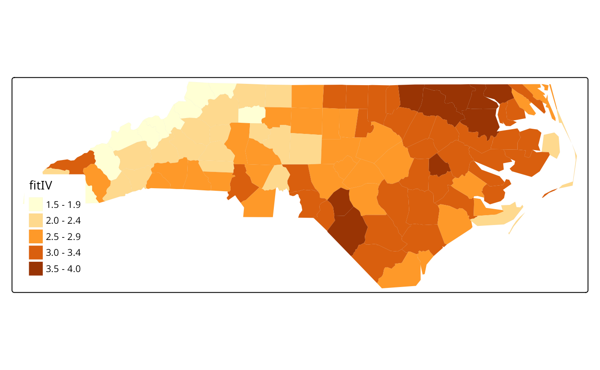

vignettes/sids_models.Rmd
sids_models.RmdThis data set was presented first in Symons, Grimson, and Yuan (1983), analysed with reference to the spatial nature of the data in Cressie and Read (1985), expanded in Cressie and Chan (1989), and used in detail in Cressie (1991). It is for the 100 counties of North Carolina, and includes counts of numbers of live births (also non-white live births) and numbers of sudden infant deaths, for the July 1, 1974 to June 30, 1978 and July 1, 1979 to June 30, 1984 periods. In Cressie and Read (1985), a listing of county neighbours based on shared boundaries (contiguity) is given, and in Cressie and Chan (1989), and in Cressie (1991, 386–89), a different listing based on the criterion of distance between county seats, with a cutoff at 30 miles. The county seat location coordinates are given in miles in a local (unknown) coordinate reference system. The data are also used to exemplify a range of functions in the spatial statistics module user’s manual (Kaluzny et al. 1996).
We will be using the spdep and spatialreg packages, here version: spdep, version 1.1-7, 2021-03-17, the sf package and the tmap package. The data from the sources referred to above is documented in the help page for the nc.sids data set in spData. The actual data, included in a shapefile of the county boundaries for North Carolina were made available in the maptools package.1 These data are known to be geographical coordinates (longitude-latitude in decimal degrees) and are assumed to use the NAD27 datum.
library(spdep)
nc <- st_read(system.file("shapes/sids.shp", package="spData")[1], quiet=TRUE)
st_crs(nc) <- "+proj=longlat +datum=NAD27"
row.names(nc) <- as.character(nc$FIPSNO)
nc$ft.SID74 <- sqrt(1000)*(sqrt(nc$SID74/nc$BIR74) + sqrt((nc$SID74+1)/nc$BIR74))
nc$both <- factor(paste(nc$L_id, nc$M_id, sep=":"))## [1] TRUEWe will now examine the data set reproduced from Cressie and collaborators, included in spData (formerly in spdep), and add the neighbour relationships used in Cressie and Chan (1989) to the background map as a graph shown in Figure :
gal_file <- system.file("weights/ncCC89.gal", package="spData")[1]
ncCC89 <- read.gal(gal_file, region.id=nc$FIPSNO)We will now try to replicate three of the four models fitted by (Cressie and Chan 1989) to the transformed rates variable. The first thing to do is to try to replicate their 30 mile distance between county seats neighbours, which almost works. From there we try to reconstruct three of the four models they fit, concluding that we can get quite close, but that a number of questions are raised along the way.
Building the weights is much more complicated, because they use a combination of distance-metric and population-at-risk based weights, but we can get quite close (see also Kaluzny et al. 1996):
sids.nhbr30.dist <- nbdists(ncCC89, cbind(nc$east, nc$north))
sids.nhbr <- listw2sn(nb2listw(ncCC89, glist=sids.nhbr30.dist, style="B", zero.policy=TRUE))
dij <- sids.nhbr[,3]
n <- nc$BIR74
el1 <- min(dij)/dij
el2 <- sqrt(n[sids.nhbr$to]/n[sids.nhbr$from])
sids.nhbr$weights <- el1*el2
sids.nhbr.listw <- sn2listw(sids.nhbr)The first model (I) is a null model with just an intercept, the second (II) includes all the 12 parcels of contiguous counties in 4 east-west and 4 north-south bands, while the fourth (IV) includes the transformed non-white birth-rate:
Cressie identifies Anson county as an outlier, and drops it from further analysis. Because the weights are constructed in a complicated way, they will be subsetted by dropping the row and column of the weights matrix:
lm_nc <- lm(ft.SID74 ~ 1, data=nc)
outl <- which.max(rstandard(lm_nc))
as.character(nc$NAME[outl])## [1] "Anson"
W <- listw2mat(sids.nhbr.listw)
W.4 <- W[-outl, -outl]
sids.nhbr.listw.4 <- mat2listw(W.4)
nc2 <- nc[!(1:length(nc$CNTY_ID) %in% outl),]It appears that both numerical issues (convergence in particular) and uncertainties about the exact spatial weights matrix used make it difficult to reproduce the results of Cressie and Chan (1989), also given in Cressie (1991). We now try to replicate them for the null weighted CAR model (Cressie has intercept 2.838, \(\hat{\theta}\) 0.833, for k=1):
library(spatialreg)
ecarIaw <- spautolm(ft.SID74 ~ 1, data=nc2, listw=sids.nhbr.listw.4, weights=BIR74, family="CAR")
summary(ecarIaw)##
## Call: spautolm(formula = ft.SID74 ~ 1, data = nc2, listw = sids.nhbr.listw.4,
## weights = BIR74, family = "CAR")
##
## Residuals:
## Min 1Q Median 3Q Max
## -2.010292 -0.639658 -0.062209 0.443549 2.018065
##
## Coefficients:
## Estimate Std. Error z value Pr(>|z|)
## (Intercept) 2.945323 0.095135 30.959 < 2.2e-16
##
## Lambda: 0.86814 LR test value: 22.83 p-value: 1.7701e-06
## Numerical Hessian standard error of lambda: 0.04838
##
## Log likelihood: -118.8432
## ML residual variance (sigma squared): 1266.5, (sigma: 35.588)
## Number of observations: 99
## Number of parameters estimated: 3
## AIC: 243.69The spatial parcels model seems not to work, with Cressie’s \(\hat{\theta}\) 0.710, and failure in the numerical Hessian used to calculate the standard error of the spatial coefficient:
ecarIIaw <- spautolm(ft.SID74 ~ both - 1, data=nc2, listw=sids.nhbr.listw.4, weights=BIR74, family="CAR")
summary(ecarIIaw)##
## Call:
## spautolm(formula = ft.SID74 ~ both - 1, data = nc2, listw = sids.nhbr.listw.4,
## weights = BIR74, family = "CAR")
##
## Residuals:
## Min 1Q Median 3Q Max
## -2.55896 -0.46338 -0.02035 0.38935 2.05682
##
## Coefficients:
## Estimate Std. Error z value Pr(>|z|)
## both1:2 2.06223 0.20016 10.3031 < 2.2e-16
## both1:3 2.91823 0.14139 20.6400 < 2.2e-16
## both1:4 4.11486 0.29939 13.7439 < 2.2e-16
## both2:1 2.57650 0.26905 9.5762 < 2.2e-16
## both2:2 2.17403 0.18222 11.9305 < 2.2e-16
## both2:3 2.67397 0.15329 17.4443 < 2.2e-16
## both2:4 3.11361 0.24699 12.6062 < 2.2e-16
## both3:1 2.94400 0.29893 9.8486 < 2.2e-16
## both3:2 2.65391 0.14098 18.8250 < 2.2e-16
## both3:3 2.91619 0.17099 17.0552 < 2.2e-16
## both3:4 3.20425 0.20349 15.7468 < 2.2e-16
## both4:3 3.80286 0.20806 18.2781 < 2.2e-16
##
## Lambda: 0.2109 LR test value: 1.3088 p-value: 0.25261
## Numerical Hessian standard error of lambda: NaN
##
## Log likelihood: -99.25505
## ML residual variance (sigma squared): 891.48, (sigma: 29.858)
## Number of observations: 99
## Number of parameters estimated: 14
## AIC: 226.51Finally, the non-white model repeats Cressie’s finding that much of the variance of the transformed SIDS rate for 1974–8 can be accounted for by the transformed non-white birth variable (Cressie intercept 1.644, \(\hat{b}\) 0.0346, \(\hat{\theta}\) 0.640 — not significant), but the estimate of the spatial coefficient is not close here:
ecarIVaw <- spautolm(ft.SID74 ~ ft.NWBIR74, data=nc2, listw=sids.nhbr.listw.4, weights=BIR74, family="CAR")
summary(ecarIVaw)##
## Call:
## spautolm(formula = ft.SID74 ~ ft.NWBIR74, data = nc2, listw = sids.nhbr.listw.4,
## weights = BIR74, family = "CAR")
##
## Residuals:
## Min 1Q Median 3Q Max
## -1.99056 -0.44858 0.15468 0.60623 1.95541
##
## Coefficients:
## Estimate Std. Error z value Pr(>|z|)
## (Intercept) 1.4371519 0.2252729 6.3796 1.775e-10
## ft.NWBIR74 0.0408354 0.0062919 6.4902 8.572e-11
##
## Lambda: 0.22391 LR test value: 1.1577 p-value: 0.28194
## Numerical Hessian standard error of lambda: 0.5539
##
## Log likelihood: -114.0376
## ML residual variance (sigma squared): 1201.5, (sigma: 34.663)
## Number of observations: 99
## Number of parameters estimated: 4
## AIC: 236.08
nc2$fitIV <- fitted.values(ecarIVaw)
tm_shape(nc2) + tm_fill("fitIV")
The final figure shows the value of the log likelihood function for the null model (I):
Cressie, N. 1991. Statistics for Spatial Data. New York: Wiley.
Cressie, N., and N. H. Chan. 1989. “Spatial Modelling of Regional Variables.” Journal of the American Statistical Association 84: 393–401.
Cressie, N., and T. R. C. Read. 1985. “Do Sudden Infant Deaths Come in Clusters?” Statistics and Decisions Supplement Issue 2: 333–49.
Kaluzny, S. P., S. C. Vega, T. P. Cardoso, and A. A. Shelly. 1996. S-PLUS SPATIALSTATS User’s Manual Version 1.0. Seattle: MathSoft Inc.
Symons, M. J., R. C. Grimson, and Y. C. Yuan. 1983. “Clustering of Rare Events.” Biometrics 39: 193–205.
These data were taken with permission from a now-offline link: [sal.agecon.uiuc.edu/datasets/sids.zip]; see also GeoDa Center for a contemporary source.↩︎